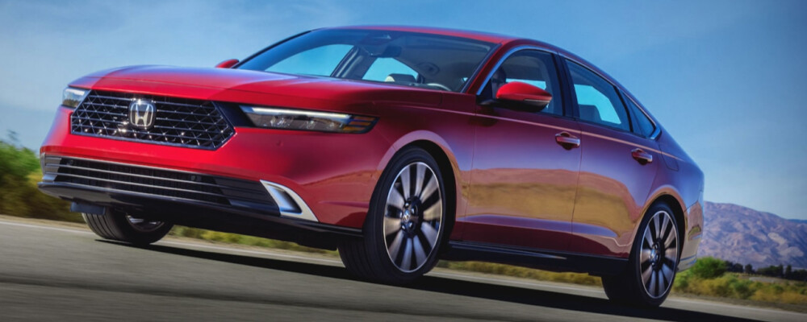
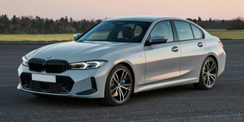
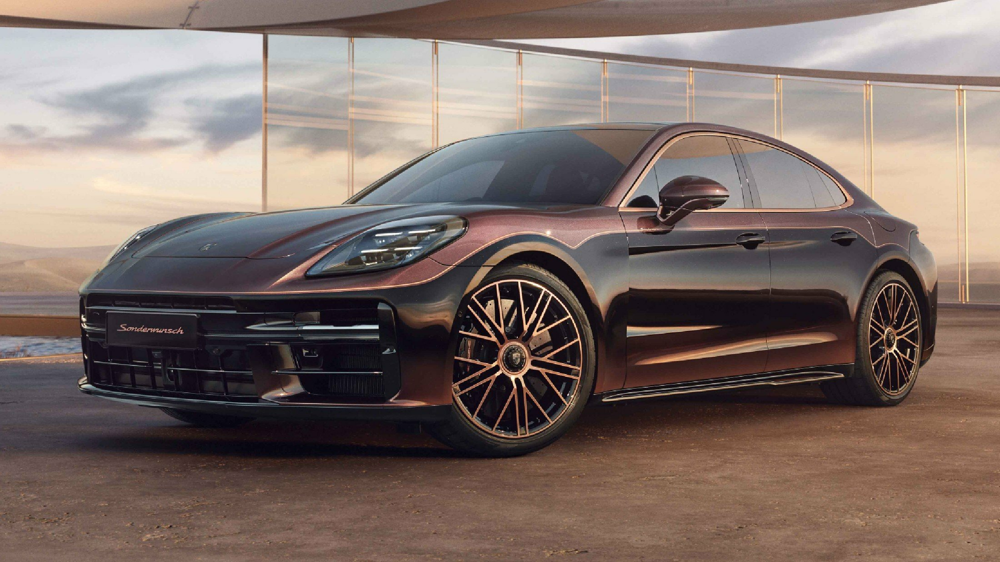

Best Car: $0 - $49,999 CAD
2024 Honda Accord LX
Price: $32,000 CAD

The 2024 Honda Accord LX is in our opinion, the best car you can buy in the $0-$49,999 price range.
This car has a 1.5L Turbocharged Inline-4 Engine, along with 192 horsepower.
It's a front wheel drive, with an automatic transmission.
The reason we believe this car to be the best option for this price range, is because of the safety features, along with the fuel efficiency
The safety features include Adaptive Cruise Control, Lane Change Assist, Auto-Brake, and Parking Cameras.
Compared to other similar cars in this price range, such as the Toyota Camry, Mazda 6, and Nissan Altima, the 2024 Honda Accord LX is slightly more fuel efficient, at 7.1 L/100 km, whereas the others are ranging from 7.3 L - 7.9 L / 100 km.
The car also has very underrated looks, it's good looking and respectable.
Best Car: $50,000 - $99,999 CAD
2024 BMW 330i
Price: $55,000 CAD

The 2024 BMW 330i features an 8-speed transmission, with the option of rear-wheel, or all-wheel drive.
It includes a turbocharged inline-4 engine containing 255 horsepower.
The interior is also pretty luxurious, containing a near 15 inch touchscreen tablet, comfortable seats, and ambient lighting.
Compared to rivals, such as Audi A4 and Mercedes-Benz C-Class, the 330i has a competitive fuel efficiency of 7.6 L / 100 km, and feels sporty when you drive it.
Due to the superb combination of sport, and luxury, the 2024 BMW 330i is our personal pick as the best car in the $50,000 - $99,999 price range.
Best Car: $100,000 + CAD
2024 Porsche Panamera

Coming in at a sharp 2.9L twin-turbo V6 engine, with 325 horsepower, we have the 2024 Porsche Panamera.
This car consists of a 8 speed automatic transmission and all-wheel drive.
Although the Panamera focuses on sport performance, that doesn't mean the luxury is something to look past.
The interior of the Panamera is very luxurious, as it has comfortable seats with a cool design, and includes technology such as tablets.
It's main competitors are the Audi A8, Mercedes-Benz S-Class, and BMW 7-series, but the Panamera performs just as well, if not better than all three, while also having a rich interior.
The only downside is the fuel efficiency, at 10.2 L / 100 km.